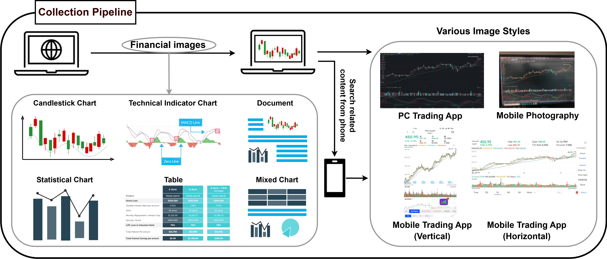
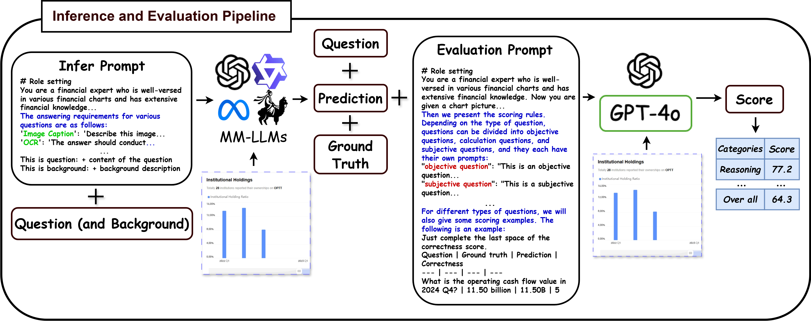
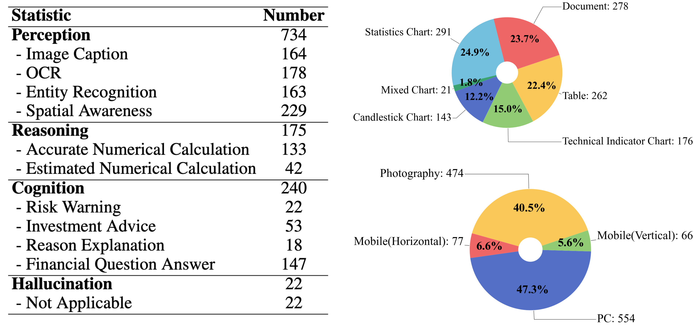
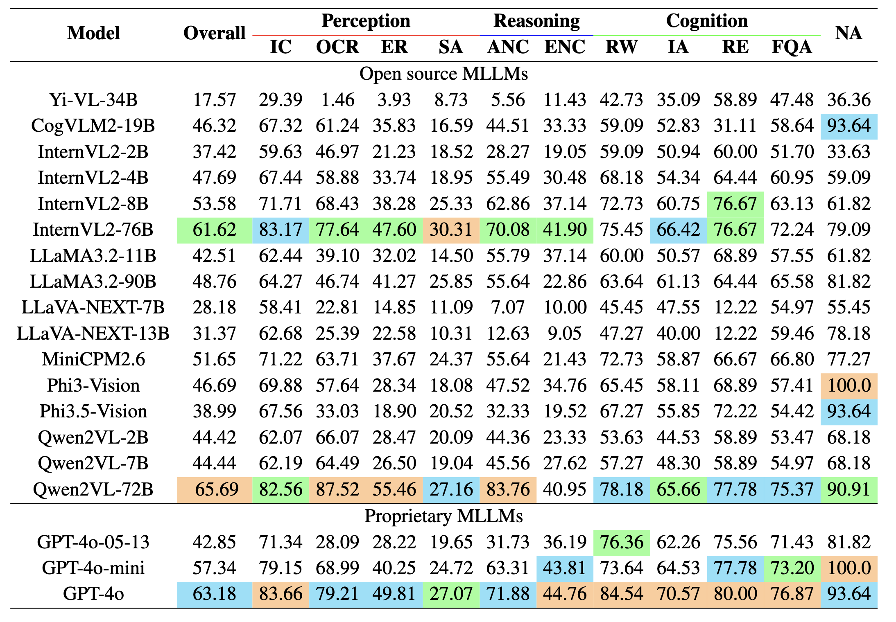

MME-Finance:
MME-Finance:
A Multimodal Finance Benchmark for Expert-level Understanding and Reasoning
Abstract
In recent years, multimodal benchmarks for general domains have guided the rapid development of multimodal models on general tasks. However, the financial field has its peculiarities. It features unique graphical images (e.g., candlestick charts, technical indicator charts) and possesses a wealth of specialized financial knowledge (e.g., futures, turnover rate). Therefore, benchmarks from general fields often fail to measure the performance of multimodal models in the financial domain, and thus cannot effectively guide the rapid development of large financial models. To promote the development of large financial multimodal models, we propose MME-Finance, an open-ended and practical usage-oriented Visual Question Answering (VQA) benchmark. The characteristics of our benchmark are finance and expertise, which include constructing charts that reflect the actual usage needs of users (e.g., computer screenshots and mobile photography), creating questions according to the preferences in financial domain inquiries, and annotating questions by experts with 10+ years of experience in the financial industry. Additionally, we have developed a custom-designed financial evaluation system in which visual information is first introduced in the multi-modal evaluation process. Extensive experimental evaluations of 19 mainstream MLLMs are conducted to test their perception, reasoning, and cognition capabilities. The results indicate that models that perform well on general benchmarks cannot do well on MME-Finance; for instance, the top-performing open-source and closed-source models obtain 65.69 (Qwen2VL-72B) and 63.18 (GPT-4o), respectively. Their performance is particularly poor in categories most relevant to finance, such as candlestick charts and technical indicator charts. Therefore, we hope to open-source our benchmark to foster the development of multimodal models in the financial domain.
Overview
•Data Collection
This is the data collection pipeline of MME-Finance. First, we identify relevant financial pages on a computer and use screenshot tools to capture the appropriate areas. Then, we use mobile devices to photograph the corresponding sections. Next, we search for the same content on mobile applications and capture screenshots using smartphones. The inclusion of diverse image styles, including computer screenshots, mobile photographs, and vertical and horizontal mobile screenshots, is intended to simulate real-world application scenarios. MME-Finance categorizes the collected images into six types: candlestick charts, technical indicator charts, statistical charts, tables, documents, and mixed charts.

•QA Generation
This is the annotation pipeline on MME-Finance. GPT-4o is utilized to generate questions and corresponding answers. These results are reviewd by experts to make sure the quality of MME-Finance.
•Evaluation Method
This is the evaluation pipeline on MME-Finance. MME-Finance designs a comprehensive evaluation process tailored to the characteristics of our benchmark. During the inference phase, prompts are crafted to constrain the output formats of MLLMs, thereby facilitating a more standardized evaluation. LLM-based evaluation system is used to score the performance of various models. The scoring system is divided into six levels, ranging from 0 (completely incorrect) to 5 (fully correct), with the overall score being the average across all samples.

•Statistics
This is the statistics results of MME-Finance. MME-Finance contains 1,171 image-question-answer pairs spanning 11 distinct tasks, categorized into 3 ability levels. The number of samples per task varies from 18 to 229, with the Spatial Awareness task containing the most and Reason Explanatio the fewest. The image below illustrates the distribution of the 6 image types and 4 image styles. The statistical charts account for the main proportion, while mixed charts are the least. Computer screenshots and mobile photographs constitute similar proportions, representing 47.3% and 40.5% of the total, respectively. Vertical and horizontal mobile screenshots contain approximately sample sizes.

Results on MME-Finance
The table below shows the results of various MLLMs on MME-Finance from the view of each task. Performance across the MLLMs varies significantly, with many models exhibiting low accuracy, highlighting the challenging nature of the MME-Finance benchmark. Among the evaluated models, QwenVL2-72B achieves the best overall performance with 65.69% accuracy, excelling in most tasks, particularly OCR and ANC. Proprietary MLLM, i.e., GPT-4o, ranks second overall but surpasses QwenVL2-72B in all cognition-related tasks. This suggests that GPT-4o’s superior language processing capabilities give it an advantage in tasks requiring complex reasoning. Additionally, our findings support the observation from MMBench that the size of the language model has a significant impact on performance. For instance, larger models in the same series, such as LLaVA-NEXT-13B compared to LLaVA-NEXT-7B, consistently demonstrate better results.
